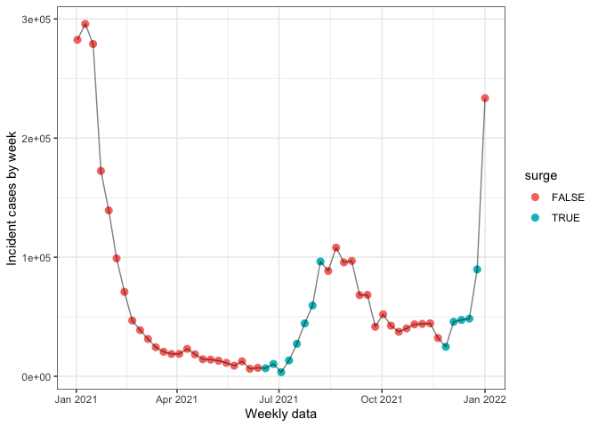

Evaluating the ensemble point forecast
Quang Nguyen
Last compiled on 2022-05-26
Data pre-loading and processing
library(here)
library(covidcast)
library(epiprocess)
library(zoltr)
library(tidyverse)
library(ggsci)
library(tsibble)
library(covidHubUtils)
library(lubridate)
library(rlang)
library(patchwork)
library(pROC)
here::i_am(path = "notebooks/ensemble-evaluation.Rmd")
source(here("R", "utils.R"))
# (settings <- get_settings(start_date = "2020-06-01", end_date = "2022-03-01"))
theme_set(theme_bw())First let’s set some parameters
d_range <- seq(ymd("2021-01-01"), ymd("2022-01-01"), by = 7)
curr_date <- "2022-01-02"
h <- 4
wk_ahead <- 1
inc_case_targets <- paste(1:h, "wk ahead inc case")
surge_thresh <- 0.5
min_inc <- 20
state <- "California"Loading forecasts and underlying data
Using covidHubUtils and zoltar we load
underlying data as well as forecasts
pred_ensembl <- load_forecasts(
models = "COVIDhub-ensemble",
dates = d_range,
date_window_size = 6,
locations = state,
types = "point",
targets = inc_case_targets,
source = "zoltar",
verbose = FALSE,
as_of = curr_date,
hub = c("US")
)## get_token(): POST: https://zoltardata.com/api-token-auth/## get_resource(): GET: https://zoltardata.com/api/projects/## get_resource(): GET: https://zoltardata.com/api/project/44/models/## get_resource(): GET: https://zoltardata.com/api/project/44/timezeros/pred_baseline <- load_forecasts(
models = "COVIDhub-baseline",
dates = d_range,
date_window_size = 6,
locations = state,
types = "point",
targets = inc_case_targets,
source = "zoltar",
verbose = FALSE,
as_of = curr_date,
hub = c("US")
)## get_token(): POST: https://zoltardata.com/api-token-auth/## get_resource(): GET: https://zoltardata.com/api/projects/## get_resource(): GET: https://zoltardata.com/api/project/44/models/## get_resource(): GET: https://zoltardata.com/api/project/44/timezeros/truth_data <- load_truth(
truth_source = "JHU",
target_variable = "inc case",
locations = state
)
true_range <- pred_ensembl %>% pull(target_end_date) %>%
unique() %>%
lubridate::as_date()
truth_epidf <- truth_data %>%
select(-c(model, location, target_variable, location_name,
abbreviation, full_location_name)) %>%
dplyr::rename("time_value" = "target_end_date") %>%
filter(time_value %in% true_range) %>%
as_epi_df(geo_type = "state")Surge classification using relative change growth rate formulation
We define surge for a given date using relative change growth rate
formulation times the bandwidth using the implementation from
epiprocess:
\[\frac{1}{h} * \left(\frac{\bar{B}}{\bar{A}} - 1\right) = \frac{1}{h} * \left(\frac{\bar{B} - \bar{A}}{\bar{A}}\right) = \\ \frac{1}{h} * \left(\frac{(h)^{-1}\left(\sum_{t = T+1}^{T + h} Y_t - \sum_{t = T+1-h}^{T} Y_t\right)}{(h)^{-1}\sum_{t = T+1-h}^{T} Y_t}\right) = \frac{1}{h} R^{h}_{T + h}\]
A surge is defined for time-point \(T\) as the difference in cumulative incident cases between the periods of \(T+1\) and \(T+h\) and \(T\) and \(T-h\). As such, an \(h\)-week ahead forecaster is a nowcaster of whether or not we’re currently in a surge.
truth_epidf <- truth_epidf %>%
mutate(gr = growth_rate(y = value, method = "rel_change", h = h) * h) %>%
mutate(surge = case_when(
gr >= surge_thresh & value >= min_inc ~ TRUE,
TRUE ~ FALSE
))
ggplot(truth_epidf, aes(x = time_value, y = value)) +
geom_point(aes(col = surge), size = 2.5) + geom_line(alpha = 0.5) +
labs(x = "Weekly data", y = "Incident cases by week")
Nowcasting surges
Here we use the following procedures for a focal timepoint \(T\) and bandwidth \(h\) (for example, 4)
- We take a time period from \(T+1-
h\) to \(T+h\). For example at
2021-01-23, we’d be taking the period from 2021-01-02 to
2021-02-20.
- We take the truth period to be from \(T+1-h\) to \(T\) (inclusive) and the forecasting period
to be from \(T+1\) to \(T+h\). The truth period would have real
underlying incident cases while the forecasting period has forecast
incident cases at times 1-\(h\) weeks
ahead. Due to the forecasting date being on Monday instead of exactly
one week before the proposed target date, we take forecast incident
values from the forecast date closest to the time period defined at
\(T+1\). For example, at 2021-01-23, we
would take forecast values for 2021-01-30 onwards from a forecast date
of 2021-01-25.
- We compute the growth rate at time \(T\) using these two periods as per the
formula above
- We then classify periods as surges using the definition and thresholds defined above.
# this function combines real case counts from time points t-h to t and forecasted
# case counts from t+1 to t+h. Growth rate at time t is then estimated using the relative change
# method
mismatch_slide <- function(slide_df, pred, h){
query_dates <- slide_df$time_value
req_len <- h * 2
# if not enough weeks for prediction
if (length(query_dates) != req_len){
return(NA_real_)
} else {
t_date <- query_dates[1:(req_len - h)]
ref <- tail(t_date, n = 1)
p_date <- query_dates[(req_len - h + 1):req_len]
t_data <- slide_df %>% filter(time_value %in% t_date) %>%
mutate(type = "true")
# due to weird issues, the ref date + 1 week should be the 1 week ahead forecast
f_date <- pred %>% filter(target_end_date == head(p_date, n = 1) & horizon == 1) %>%
pull(forecast_date) %>% unique()
p_data <- pred %>%
filter(forecast_date == f_date) %>%
filter(target_end_date %in% p_date) %>%
select(geo_value, target_end_date, value, population, geo_type) %>%
dplyr::rename("time_value" = target_end_date) %>%
mutate(type = "pred")
combine <- bind_rows(t_data, p_data)
gr <- combine %>% mutate(gr_pred = growth_rate(y = value, h = h, method = "rel_change") * h) %>%
filter(time_value == ref) %>% pull(gr_pred)
return(gr)
}
}
combined_df <- truth_epidf %>%
epi_slide(~mismatch_slide(slide_df = .x, pred = pred_ensembl, h = h), n = 2 * 7 * h, align = "center",
new_col_name = "ensembl_gr") %>%
epi_slide(~mismatch_slide(slide_df = .x, pred = pred_baseline, h = h), n = 2 * 7 * h, align = "center",
new_col_name = "baseline_gr")
combined_df <- combined_df %>% mutate(surge_ensembl = case_when(
ensembl_gr >= surge_thresh & value >= min_inc ~ TRUE,
is.na(ensembl_gr) ~ NA,
TRUE ~ FALSE
)) %>% mutate(
surge_baseline = case_when(
baseline_gr >= surge_thresh & value >= min_inc ~ TRUE,
is.na(baseline_gr) ~ NA,
TRUE ~ FALSE
))
head(combined_df, n = 20)## # A tibble: 20 × 11
## geo_value time_value value population geo_type gr surge ensembl_gr
## <chr> <date> <dbl> <dbl> <chr> <dbl> <lgl> <dbl>
## 1 ca 2021-01-02 282497 39512223 state -0.345 FALSE NA
## 2 ca 2021-01-09 295841 39512223 state -0.538 FALSE NA
## 3 ca 2021-01-16 278986 39512223 state -0.661 FALSE NA
## 4 ca 2021-01-23 172432 39512223 state -0.654 FALSE -0.372
## 5 ca 2021-01-30 139252 39512223 state -0.712 FALSE -0.579
## 6 ca 2021-02-06 99000 39512223 state -0.728 FALSE -0.638
## 7 ca 2021-02-13 70859 39512223 state -0.706 FALSE -0.667
## 8 ca 2021-02-20 46817 39512223 state -0.677 FALSE -0.733
## 9 ca 2021-02-27 38767 39512223 state -0.628 FALSE -0.606
## 10 ca 2021-03-06 31361 39512223 state -0.560 FALSE -0.484
## 11 ca 2021-03-13 24407 39512223 state -0.425 FALSE -0.442
## 12 ca 2021-03-20 20605 39512223 state -0.313 FALSE -0.469
## 13 ca 2021-03-27 18770 39512223 state -0.215 FALSE -0.306
## 14 ca 2021-04-03 18805 39512223 state -0.154 FALSE -0.346
## 15 ca 2021-04-10 23056 39512223 state -0.262 FALSE -0.0961
## 16 ca 2021-04-17 18480 39512223 state -0.333 FALSE -0.0632
## 17 ca 2021-04-24 14314 39512223 state -0.366 FALSE -0.373
## 18 ca 2021-05-01 14034 39512223 state -0.343 FALSE -0.462
## 19 ca 2021-05-08 13133 39512223 state -0.348 FALSE -0.322
## 20 ca 2021-05-15 11277 39512223 state -0.338 FALSE -0.346
## # … with 3 more variables: baseline_gr <dbl>, surge_ensembl <lgl>,
## # surge_baseline <lgl>Plotting growth rate when estimated
gr1 <- ggplot(combined_df, aes(x = time_value, y = gr)) +
geom_line(aes(col = "Est. using real data")) +
geom_line(aes(x = time_value, y = baseline_gr,
col = "Est. using baseline forecaster")) +
geom_line(aes(x = time_value, y = ensembl_gr,
col = "Est. using ensemble forecaster")) +
labs(col ="Growth Rate", x = "Week", y = "Growth Rate (adjusted for bandwidth)") +
geom_hline(yintercept = 0.5, col = "red")
gr1## Warning: Removed 1 row(s) containing missing values (geom_path).## Warning: Removed 7 row(s) containing missing values (geom_path).
## Removed 7 row(s) containing missing values (geom_path).combined_df %>% filter(month(time_value) %in% c(6,7,8))## An `epi_df` object, with metadata:
## * geo_type = state
## * time_type = day
## * as_of = 2022-05-26 14:08:58
##
## # A tibble: 13 × 11
## geo_value time_value value population geo_type gr surge ensembl_gr
## * <chr> <date> <dbl> <dbl> <chr> <dbl> <lgl> <dbl>
## 1 ca 2021-06-05 6325 39512223 state -0.293 FALSE -0.484
## 2 ca 2021-06-12 7098 39512223 state -0.0297 FALSE -0.307
## 3 ca 2021-06-19 6748 39512223 state 0.663 TRUE -0.333
## 4 ca 2021-06-26 10369 39512223 state 1.90 TRUE -0.150
## 5 ca 2021-07-03 3420 39512223 state 4.23 TRUE -0.0702
## 6 ca 2021-07-10 13343 39512223 state 5.72 TRUE 0.510
## 7 ca 2021-07-17 27337 39512223 state 4.30 TRUE 1.16
## 8 ca 2021-07-24 44416 39512223 state 2.98 TRUE 1.93
## 9 ca 2021-07-31 59501 39512223 state 1.69 TRUE 1.12
## 10 ca 2021-08-07 96376 39512223 state 0.709 TRUE 0.518
## 11 ca 2021-08-14 88468 39512223 state 0.277 FALSE 0.358
## 12 ca 2021-08-21 108097 39512223 state -0.0665 FALSE 0.242
## 13 ca 2021-08-28 95612 39512223 state -0.292 FALSE -0.0503
## # … with 3 more variables: baseline_gr <dbl>, surge_ensembl <lgl>,
## # surge_baseline <lgl>Plotting incident cases and surge classification
p1 <- ggplot(combined_df, aes(x = time_value, y = value)) +
geom_point(aes(col = surge)) +
geom_line(alpha = 0.5) +
labs(x = "Week", col = "Surge", y = "Incident cases", title = "Computed from real data")
p2 <- ggplot(combined_df, aes(x = time_value, y = value)) +
geom_point(aes(col = surge_ensembl)) +
geom_line(alpha = 0.5) +
labs(x = "Week", col = "Surge", y = "Incident cases", title = "Nowcasting w/ Ensemble Forecaster")
p3 <- ggplot(combined_df, aes(x = time_value, y = value)) +
geom_point(aes(col = surge_baseline)) +
geom_line(alpha = 0.5) +
labs(x = "Week", col = "Surge", y = "Incident cases", title = "Nowcasting w/ Baseline Forecaster")
p1 /p2/p3 + plot_layout(guides = "collect")
Misclassification rate
Ensemble Model
print("Ensemble model")## [1] "Ensemble model"combined_df %>% filter(!is.na(surge_ensembl)) %>%
summarise(misclass = mean(surge != surge_ensembl),
misclass_never = mean(surge),
sens = sum(surge & surge_ensembl)/sum(surge),
spec = sum(!surge & !surge_ensembl)/sum(!surge))## # A tibble: 1 × 4
## misclass misclass_never sens spec
## <dbl> <dbl> <dbl> <dbl>
## 1 0.109 0.217 0.5 1pROC::roc(surge ~ ensembl_gr, data = combined_df, subset = !is.na(surge_ensembl))## Setting levels: control = FALSE, case = TRUE## Setting direction: controls < cases##
## Call:
## roc.formula(formula = surge ~ ensembl_gr, data = combined_df, subset = !is.na(surge_ensembl))
##
## Data: ensembl_gr in 36 controls (surge FALSE) < 10 cases (surge TRUE).
## Area under the curve: 0.8278Baseline model
print("Baseline model")## [1] "Baseline model"combined_df %>% filter(!is.na(surge_baseline)) %>%
summarise(misclass = mean(surge != surge_baseline),
misclass_never = mean(surge),
sens = sum(surge & surge_baseline)/sum(surge),
spec = sum(!surge & !surge_baseline)/sum(!surge))## # A tibble: 1 × 4
## misclass misclass_never sens spec
## <dbl> <dbl> <dbl> <dbl>
## 1 0.130 0.217 0.4 1pROC::roc(surge ~ baseline_gr, data = combined_df, subset = !is.na(surge_baseline))## Setting levels: control = FALSE, case = TRUE## Setting direction: controls < cases##
## Call:
## roc.formula(formula = surge ~ baseline_gr, data = combined_df, subset = !is.na(surge_baseline))
##
## Data: baseline_gr in 36 controls (surge FALSE) < 10 cases (surge TRUE).
## Area under the curve: 0.7889